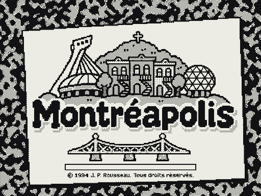
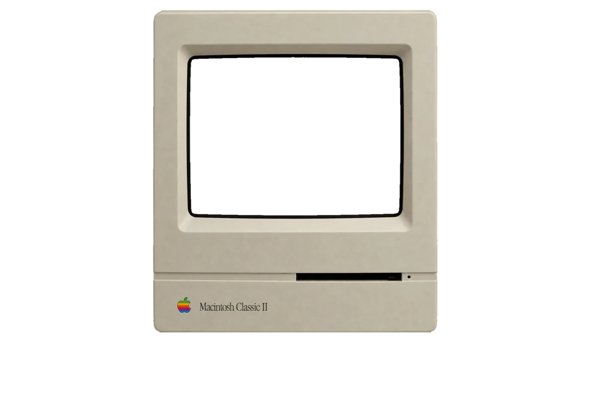
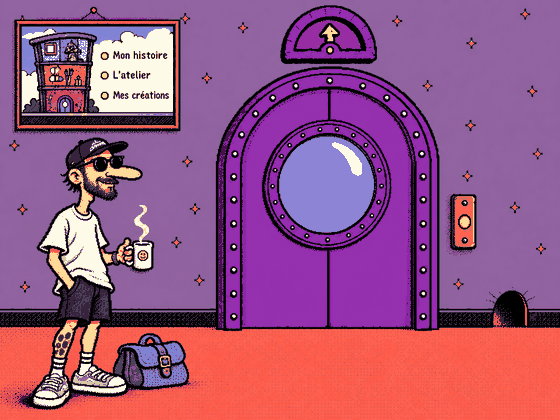
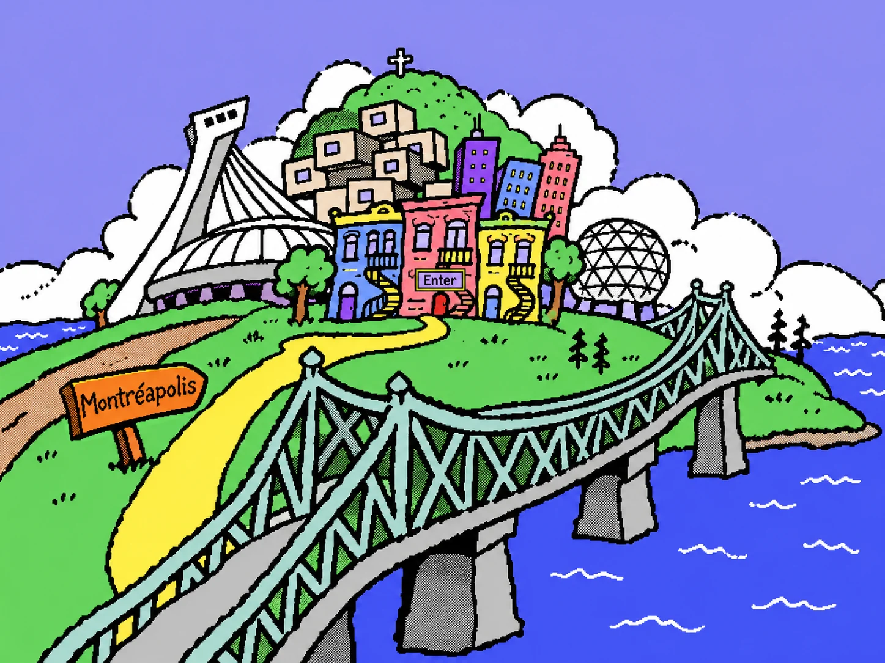
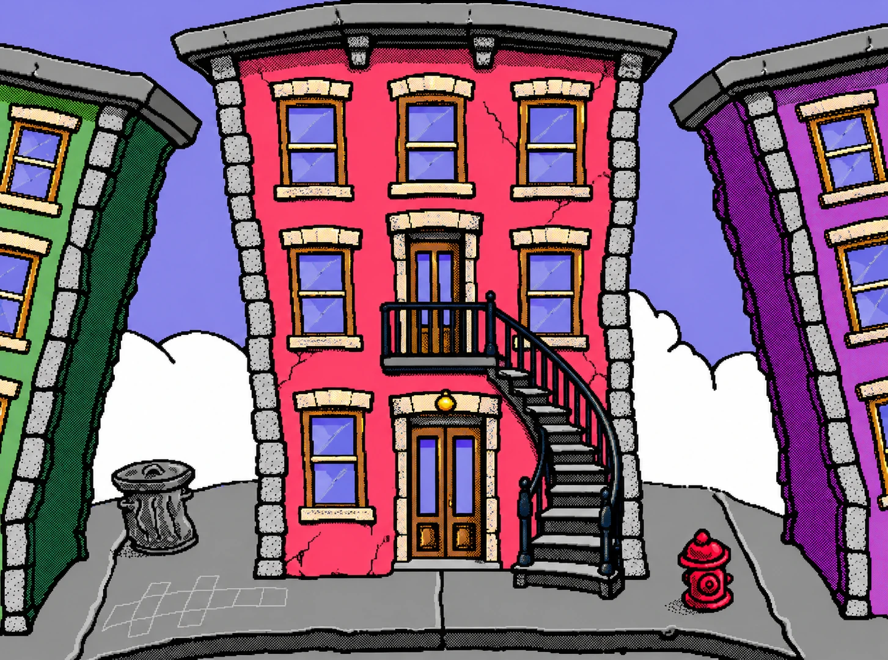

Je suis Jean-Philippe Rousseau, directeur artistique à Montréal. Je conçois des identités visuelles et des expériences numériques. Je cherche ce qui donne à chaque projet son caractère, puis je le précise.
Ma curiosité pour le numérique remonte au Macintosh familial, à Kid Pix et à Fine Artist. J’y découvrais qu’un logiciel pouvait avoir son propre univers et que l’interface elle-même pouvait donner envie de créer. Ce portfolio en garde quelque chose.
Aujourd’hui, en agence, je développe des directions artistiques et conçois le design de projets web d’envergure. J’aime faire le lien entre l’idée et sa réalisation, travailler avec les équipes et pousser les détails jusqu’à ce que le résultat soit juste.





Salut ! Tu veux :
Sur le vieux Macintosh familial, en noir et blanc, je passais des heures à dessiner avec Kid Pix et Fine Artist. Ces logiciels transformaient l’écran en terrain de jeu créatif rempli de personnages, de tampons et de surprises sonores. Au primaire, j’ai même conçu une affiche pour un club de pogs, qui a rapidement circulé dans l’école et contribué à la popularité du club — ma première leçon concrète sur l’impact visuel.
Quelques années plus tard, je lançais mon premier site web pour partager mes GIF animés et mes premières créations 3D, explorant des dinosaures construits à partir de formes primitives et expérimentant librement en ligne. Je n’avais pas conscience du poids des fichiers — trop lourds pour le 56k — mais chaque essai m’a appris à transformer la curiosité et l’expérimentation en résultats concrets. Aujourd’hui, je continue ce parcours avec les mêmes valeurs : curiosité, audace et sens du détail, enrichies par des années de pratique professionnelle et d’expérience numérique.